User Flow 1: Onboarding Process
As a new user, I want to sign up so that I can access my user dashboard.
As a returning user, I want to log in so that I can access my user dashboard.
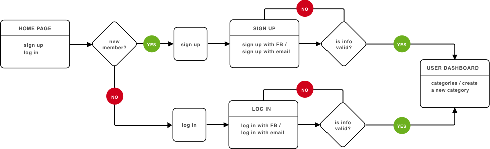
User Flow 2: Organize Content
As a returning user, I want to organize my content so that I have a organized dashboard.
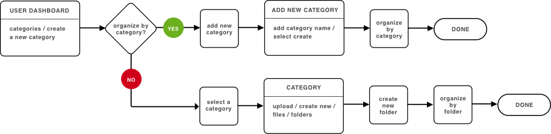
User Flow 3: Upload & Create Content
As a returning user, I want to upload & create content so that content is saved in dashboard.
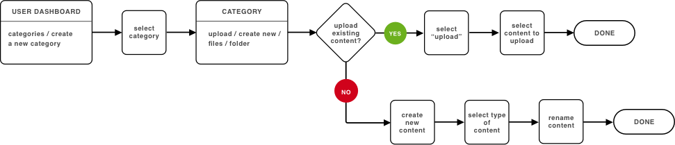
User Flow 4: Collaborate
As a returning user, I want to share content so that I can collaborate with others.
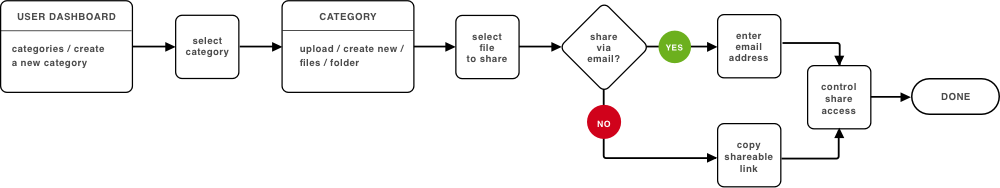


 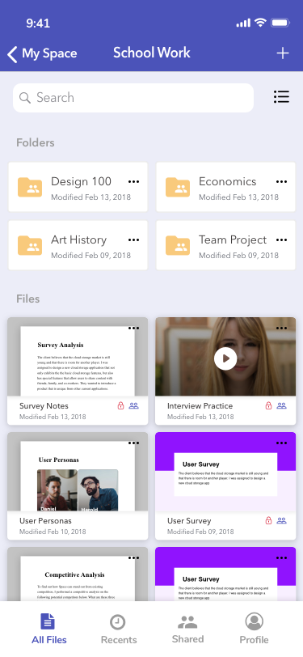
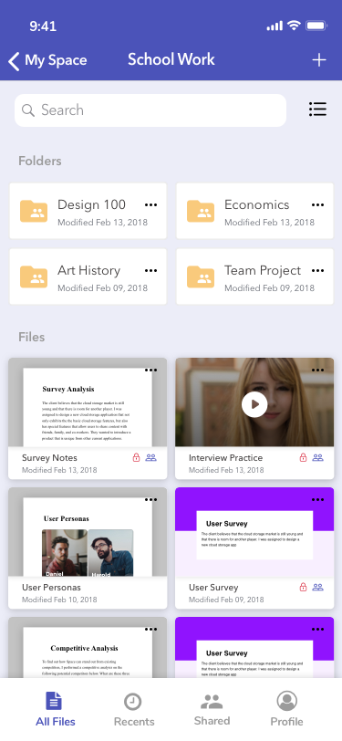

 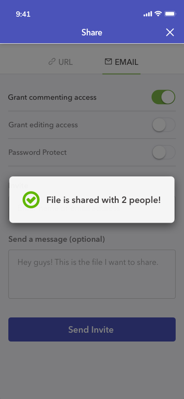
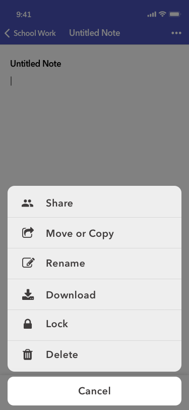
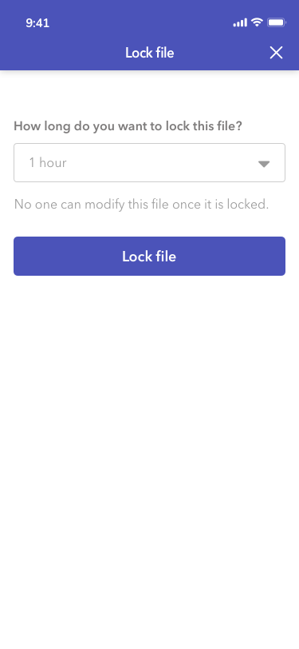
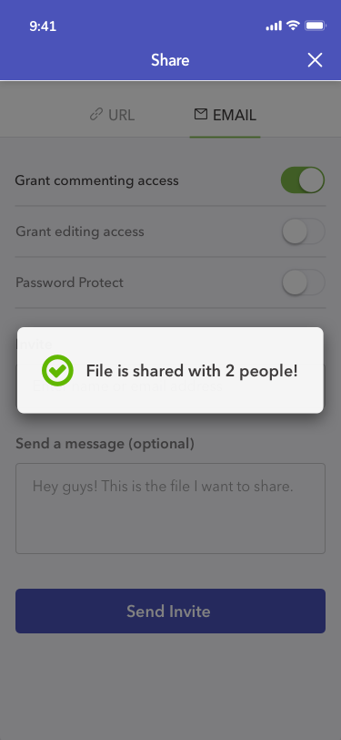
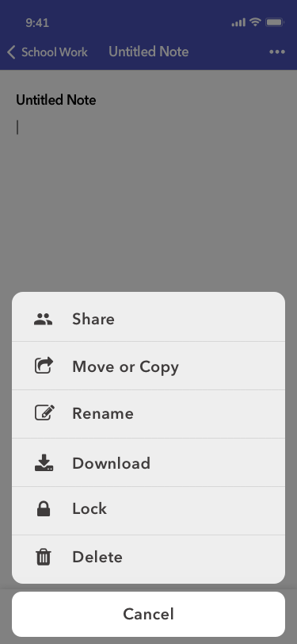
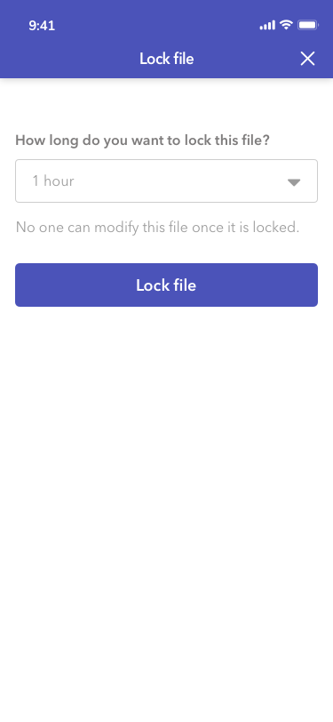
 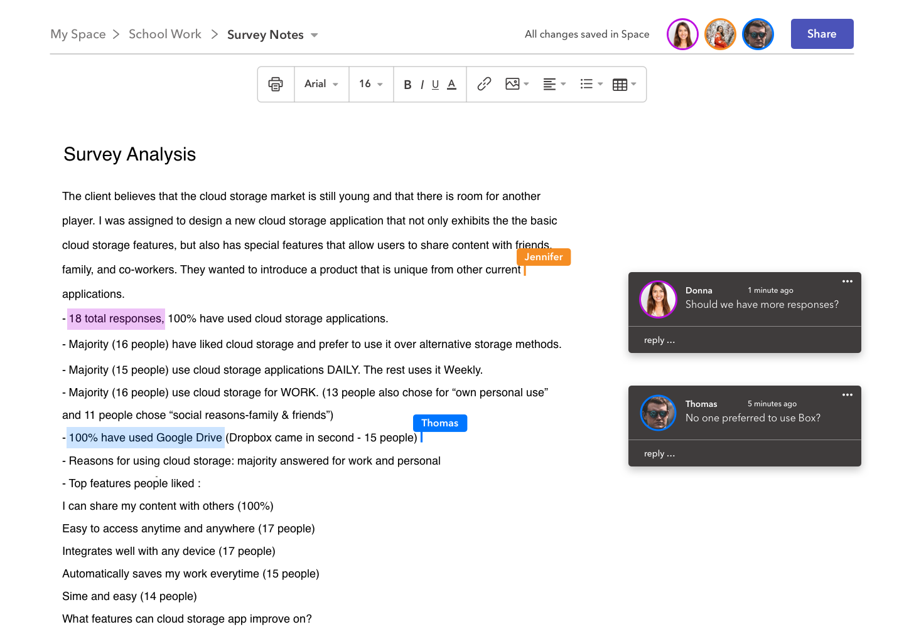
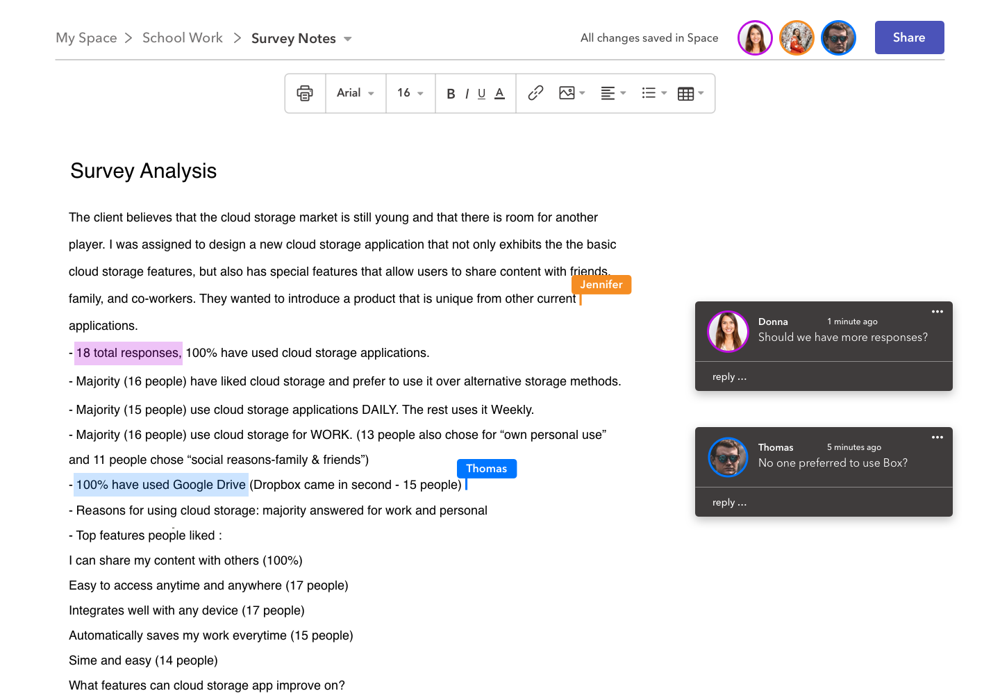